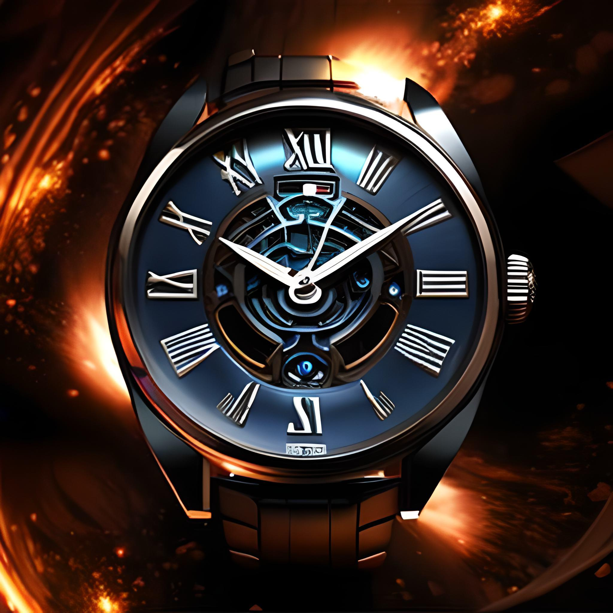
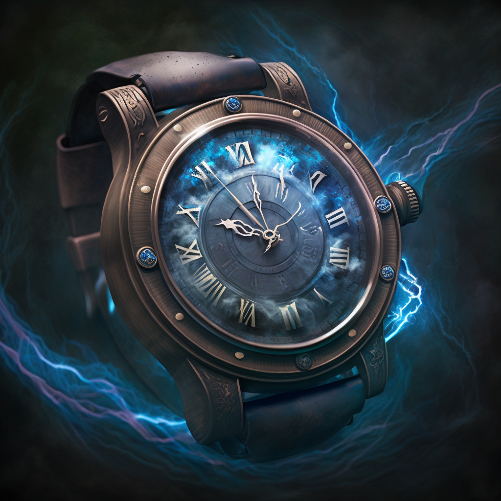

The story revolves around four brilliant astrophysicists - Dr. Tarun, Dr. Jasmeet, Dr. Himanshi, and Dr. Nelson - who have always dreamed of creating a time machine watch. After years of research, they develop an innovative idea to manipulate a wormhole to create a time machine.They spend several months working on their plan and finally succeed in creating a prototype time machine watch. The watch is equipped with a dial that can be set to any date in the past or future. Dr. Tarun and Dr. Himanshi creates a device that can generate a stable wormhole, which is necessary to make the time machine work. Dr. Nelson and Dr. Jasmeet work on the interface of the watch to make watch work with the physics, making sure it's user-friendly and safe for the person traveling through time. After several years of hard work, the time machine watch is ready for testing.The four scientists test the time machine on themselves by setting the dial to 100 years in the past. They step through the wormhole and find themselves in a completely different time and place. They explore the area and are amazed to see the world as it was 100 years ago.After spending some time in the past, they return to the present through the wormhole. The scientists are thrilled with the success of their invention and present it to the world.
Break The Flow
Products

TimeTwist
A time machine watch is a remarkable device that enables the wearer to travel through time, allowing them to visit different eras and witness historical events firsthand.....
Price: 1 Million
Buy now

TimeTwist
A time machine watch is a remarkable device that enables the wearer to travel through time, allowing them to visit different eras and witness historical events firsthand.....
Price: 1 Million
Buy now